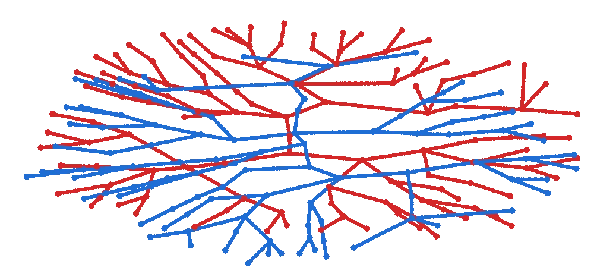
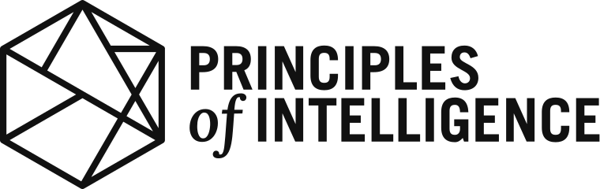

Fellowship
Cultivating human agency in the age of AI.
The Cape Institute for Safe AI (CISAI) is a research and capacity building node focused on addressing the risks from advanced AI, based in Cape Town, South Africa.
Our key focus areas
- Open Workspace
- Research Lab
- Residency Programs
- Fieldbuilding Events

What we do.

We expect AI to be the most transformative technology of our time, and as such we expect it to exacerbate the systemically vulnerable world we inhabit. With this in mind, we are establishing a research lab and creating a capacity building hub that will act as a Schelling point for people working on solving the challenges of rapid technological acceleration.
History
CISAI is the next iteration of AI Safety South Africa (AISSA). AISSA was founded in 2024 by Leo Hyams and Benjamin Sturgeon. They spent two years building the AI safety ecosystem in Cape Town, and South Africa more broadly. In 2025, AISSA grew from a two-person founding team into a hub running research programs and capacity building initiatives in partnership with leading AI safety organisations such as the UK AI Security Institute and the Cooperative AI Foundation.
CISAI builds on AISSA's capacity building mission by establishing a larger workspace and formally launching a research lab. This shift enables the organisation to host larger programs, establish a more permanent hub, and take on more ambitious research.
How we are stewarding a movement.

Our goal is to contribute to the AI safety effort by bringing the brightest minds in our network together, as we see phenomenal talent in Africa that is not being tapped. By creating a Schelling point on the continent, we can foster connection between local talent and the frontier of AI safety, facilitating collaboration with the global network. We believe that South Africa has the potential, if it plays its cards right, to join the ranks of AI middle powers and have a significant stake in steering the AI future for the better. We want to play a meaningful role in stewarding this future.
50+Desks at our open workspace
10+Programs offered
100+Events held
2000+Participants reached
Open Workspace
We run an open workspace in central Cape Town for professionals working in AI safety and d/acc related fields. We host residential research programs, community events, our research lab, and affiliated researchers here. The space is designed to cultivate knowledge exchange, idea generation, and deep work.
We are a proud workspace partner of the Foresight Institute and are their first affiliate-run science, innovation, and technology node in addition to their nodes in San Francisco and Berlin.
Apply to join the spacePrograms
View all Programs →
Course
Intro Transformative AI - April 2025

Course
Intro to Cooperative AI - Q2 2025

Course
Intro to Transformative AI - February 2025
Events
View all Events →
Talk
Cooperative AI Research Fellowship Closing Showcase
- Apr 24, 2026
- The Hasso Plattner School of Design Thinking Afrika
- 113 attendees

Workshop
AI Safety Research Workshop
- Mar 27, 2026
- School for Data Science and Computational Thinking
- 15 attendees

Talk
AI Safety SA 2026 Kick Off Event
- Feb 20, 2026
- Workshop17 Kloof Street
- 80 attendees
Partners, Collaborators, and Funders




Understanding risk and improving systemic resilience.
Frontier AI systems are rapidly advancing at consequential real-world agentic tasks, and already pose significant threats to our existing infrastructure. AI capabilities alongside appropriate control measures and societal safeguards are poorly understood. We advance the frontier of safety, security, and resilience through our research efforts.
Our Research Bets
Multi-agent
With increasingly autonomous agents being deployed, novel risks from multi-agent interactions arise. Large systems of multiple AI actors pose unique threats that need to be empirically characterised and mitigated. Single-agent safety and alignment techniques will be insufficient for addressing these complex interactions.
Multi-polar
The frontier of AI is not dominated by a single actor, and as progress is costly to push, and second movers appear to catch up relatively easily. We should not endorse a race, but support interventions that make collective governance of this technology possible and distribute the benefits broadly.
Decentralised defence
While distributing AI capabilities involves its own risks, it also enables decentralised defence against malicious actors (a recent example). We believe that we should be developing methods to improve the resilience of our infrastructure to handle an expanding threat landscape, and that privacy-preserving AI can be a useful tool in this endeavour.
Reach out to us here.
Follow
Message sent. We'll be in touch.